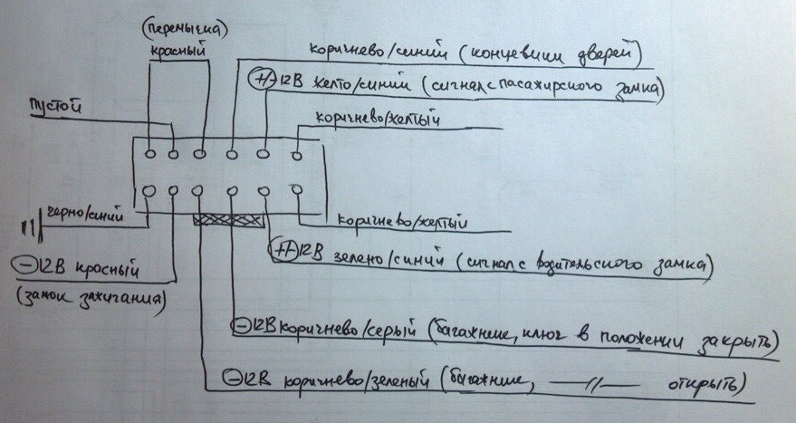
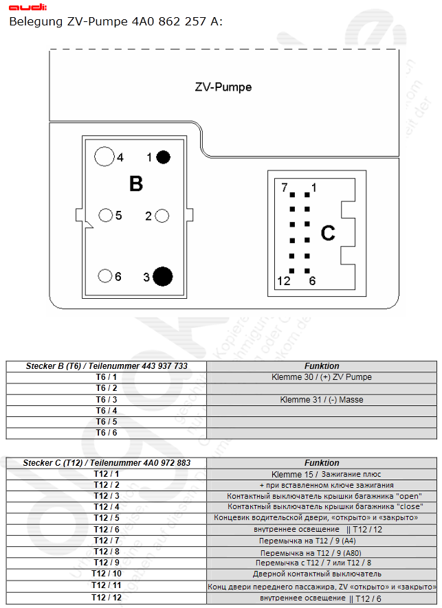
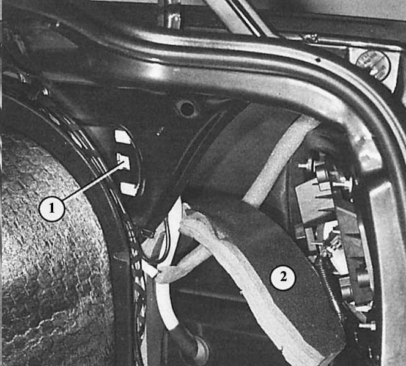
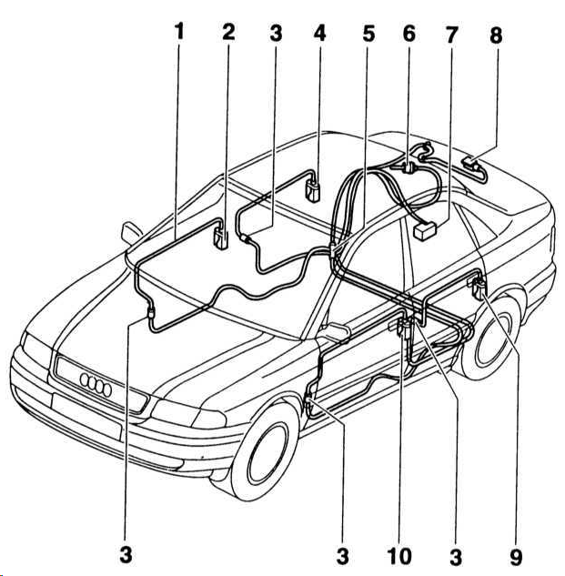
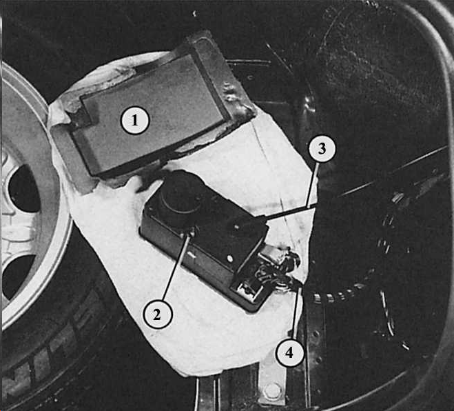
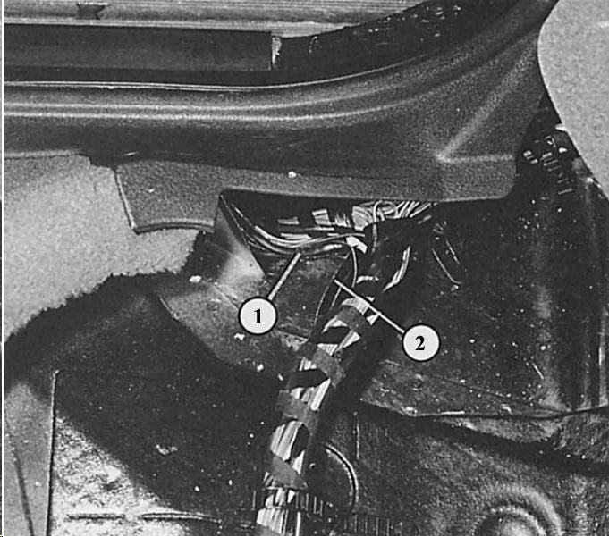

Центральный замок

http://www.sizov.org/opisanie-blokov-czz-vag-1983-2003goda/

Как открыть замки при условии исправного компрессора:
Не мог заправится бензином потому, что крышка от бака была закрыта. Поднял заднее сиденье, с правой стороны есть переходник с трубками разных цветов. так вот нагреваем зажигалкой у основания черную трубку и снимаем. Надо не вдувать, а всасывать воздух из черной трубки и тогда багажник откроется. Если надо открыть крышку бака то из пластмассового переходника, откуда сняли черную трубку, втянуть в себя воздух.

Аварийная деблокировка крышки топливного бака при неисправности центрального замка: снимите справа облицовку багажника, откиньте изоляционную плиту (2), нажмите на крепежный фиксатор (1) серводвигателя центрального замка и вытяните назад исполнительный элемент.
Все двери, крышка багажника и крышка топливного бака, а также замок в крышке багажника открываются и закрываются поворотом ключа в замке двери водителя или в замке двери пассажира рядом с водителем. Основным звеном системы является так называемый двойной нагнетательный насос, который приводится электродвигателем. При повороте ключа в положение «открыто» насос создает повышенное давление, в результате чего различные коммутирующие элементы в автомобиле снимают действующую блокировку.
С двойным нагнетательным насосом скомбинирован блок управления центрального замка, а также блок управления притивоугонной системы, если она установлена в автомобиле.
Далее описывается серийный центральный замок. Функции более дорогостоящих систем с противоугонными установками, охраной салона, инфракрасным дистанционным управлением (см. также главу Электротехническое оборудование) в своей основной функции также базируются на этой системе, как и «центральный замок безопасности».
|

|
Совет: Особенность замка багажника: в вертикальном положении замка багажника – независимо от центрального замка – всегда закрыт. Это не допускает открытие багажника проворными ворами при остановке на светофоре. В горизонтальном положении замок багажника реагирует на центральную блокировку совершенно нормально. |
Проверка центрального замка
|
ПОРЯДОК ВЫПОЛНЕНИЯ |
- Дверь водителя и пассажира рядом с водителем или крышку багажника закройте и откройте ключом.
- Центральный замок должен активизироваться от всех трех замков.
- Примерно через две секунды должны быть заблокированы все замки.
- Если насос работает дольше пяти секунд, система негерметична – в этом случае двойной нагнетательный насос может работать максимум 35 с, после этого он должен отключиться.
| |
|

|
Совет: Если однажды центральный замок вышел из строя, двери и крышку багажника можно открыть и закрыть, как обычно, ключом. Точно так же кнопки блокировки дверей можно приводить в действие вручную. Только крышку топливного бака нужно деблокировать отдельно: демонтировать правую облицовку багажника. Надавите на крепежный фиксатор серводвигателя центрального замка крышки топливного бака и вытяните исполнительный элемент назад. |
Поиск неисправностей в электрике
Приведенное ниже описание также относится к автомобилям со стандартным центральным замком. Электрическая проверка осуществляется на 6- и 12-полюсном штекерном разъеме на двойном нагнетательном насосе. В автомобилях с противоугонной системой есть еще один 16-полюсный разъем на насосе, который при проверке остается без внимания.
Если насос не работает ни при повороте ключа в замке двери водителя и пассажира рядом с водителем, ни в замке багажника, то:
|
ПОРЯДОК ВЫПОЛНЕНИЯ |
- Проверьте предохранитель.
- Демонтируйте облицовку багажника сзади и с правой стороны; двойной нагнетательный насос находится справа внизу рядом с дном багажника и упакован в пенопласт.
- «Распакуйте» двойной нагнетательный насос.
|

|
Важно: вначале отсоедините от насоса многоштырьковый(ые) разъем(ы) с тонкими проводами – под конец разъем с толстым проводом (подача тока). |
- Снимите оболочку 12-штырькового разъема
- Проверка переключающего элемента в двери водителя: подключите контрольную лампу к разъему между контактом зеленого/синего провода и массой кузова.
- Контрольная лампа должна гореть постоянно, если дверь водителя открывается ключом. В этом случае размыкающий контакт в порядке.
- Если лампа не загорается, то в двери водителя неисправен размыкающий контакт или нет проводимости в подводящем проводе.
- Переключите контрольную лампу: вместо массы один из контактов контрольной лампы подключается к «+» аккумулятора. Другой контакт остается подсоединенным к разъему (контакт зеленого/синего провода).
- Закройте дверь водителя ключом.
- Если теперь контрольная лампа горит постоянно, то замыкающий контакт переключающего элемента в порядке.
- Если лампа не загорается и нет дефекта в проводе, то неисправен переключающий элемент.
- Проверка переключающего элемента в двери пассажира рядом с водителем: в отсоединенном разъеме насоса подключите контрольную лампу между контактом желтого/синего провода и массой кузова.
- Контрольная лампа должна гореть постоянно, если дверь пассажира рядом с водителем открывается ключом. В этом случае размыкающий контакт переключающего элемента в порядке.
- Если лампа не загорается, то в двери пассажира рядом с водителем неисправен размыкающий контакт или нет проводимости в подводящем проводе.
- Переключите контрольную лампу: вместо массы один из контактов контрольной лампы подключается к «+» аккумулятора. Другой контакт остается подсоединенным к разъему (контакт желтого/синего провода).
- Закройте дверь пассажира рядом с водителем ключом.
- Если теперь контрольная лампа горит постоянно, то замыкающий контакт переключающего элемента в порядке.
- Если лампа не загорается и нет дефекта в проводе, то неисправен переключающий элемент.
- Проверка переключающего элемента в замке багажника: в отсоединенном разъеме насоса подключите контрольную лампу между контактом синего/красного провода и «+» аккумулятора.
- Контрольная лампа должна гореть постоянно, если замок багажника открывается ключом. В этом случае размыкающий контакт переключающего элемента в порядке.
- Если лампа не загорается, то в замке багажника неисправен размыкающий контакт или нет проводимости в подводящем проводе.
- Переключите контрольную лампу: вместо синего/красного провода теперь один из контактов контрольной лампы подключается к серому/белому проводу. Другой контакт остается подсоединенным к «+» аккумулятора.
- Закройте замок багажника ключом.
- Если контрольная лампа горит постоянно, пока ключ остается в положении «закрыто», то замыкающий контакт переключающего элемента в порядке.
- Если лампа не загорается и нет дефекта в проводе, то неисправен переключающий элемент.
- Проверка двойного нагнетательного насоса: если работа переключающих элементов насоса гарантирована (проверена), то причиной неисправности остается только подача тока (по тонкому красному проводу в 12-штырьковом разъеме, а также по толстому красному/синему проводу или тонкому красному/черному проводу в маленьком 6-штырьковом разъеме) и соединение с массой (толстый коричневый провод).
- Если все в порядке, то неисправен двойной нагнетательный насос. Замените.
| |
Здесь видны детали прокладки шланга центрального замка
|
 |
|
1 – шланг;
2 – переключающий элемент двери пассажира рядом с водителем;
3 – соединительная деталь;
4 – переключающий элемент двери справа сзади;
5 – деталь отвода под задним сиденьем; |
6 – переключающий элемент двери крышки топливного бака;
7 – двойной нагнетательный насос;
8 – переключающий элемент крышки багажника;
9 – переключающий элемент двери слева сзади;
10 – переключающий элемент двери водителя. |

Двойной нагнетательный насос (2) центрального замка установлен под правой облицовкой багажника. Здесь он «вынут» из своей оболочки из пенопласта (1). Далее вы видите: электрические провода (4) и нагнетательный/вакуумный шланг (3) к переключающим элементам.

Под задним сиденьем центральный нагнетательный/вакуумный шланг разветвляется на жгут к правым дверям (1) и на жгут к левым дверям (2).
Поиск неисправностей в пневматической системе
|
ПОРЯДОК ВЫПОЛНЕНИЯ |
- Для проверки наличия негерметичности в центральном замке (признак: двойной нагнетательный насос работает слишком долго) нужно последовательно проверить всю систему.
- Двойной нагнетательный насос: непосредственно у насоса сожмите шланг плоскогубцами и таким образом плотно перекройте. Приведите в действие один из замков.
- Если двойной нагнетательный насос при активизации центрального замка работает дольше 3, макс. 7 с., то насос негерметичен. Замените его.
- Переключающие элементы в дверях и крышках: поочередно пережмите все шланги непосредственно около коммутирующих элементов. Для этого демонтируйте соответствующие облицовки (глава Детали кузова). Каждый раз активизируйте один из замков.
- Двойной нагнетательный насос при активизации центрального замка не должен работать дольше 3, макс. 7 с.
- После отсоединения дефектного (негерметичного) узла насос работает нормально, т.е. меньше 3 с. Замените неисправную деталь.
| |
|

|
Совет: Для того чтобы при отсоединении шлангов не демонтировать всю облицовку, можно пережать шланги у отвода – вначале жгут к правым дверям, затем к левым дверям. |